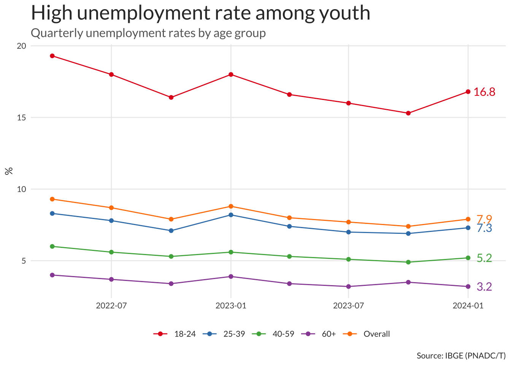

Brazil has an enormous ‘young’ population that will both boost its labor force in the years to come. Failures in the education system and unequal access to opportunities, however, may dampen this potential economic gain. Recent statistics indicate that Brazil has one of the largest NEET populations in the world.
brazil
demographics
data-visualization
ggplot2
english
Author
Vinicius Oike
Published
May 5, 2024
Generations in Brazil
Like many other countries, Brazil is aging rapidly. The combination of increasing life expectancy and declining fertility rates means that, in the long run, the proportion of elderly people in the population will rise, while the share of young people will decline. Despite this long-term trend, the current demographic outlook reveals the largest contingent of teens and young adults in Brazilian history. Nearly 100 million people, close to half of the population, belong to Gen Z and Gen Y (Millennials), ranging in age from 12 to 43.
Generations by birth year defined by the Pew Research Center
This should be the last great young population for Brazil which means the country should try to make the best of it. As this population begins to age, dependency ratios will increase rapidly pressuring the already fragile public pension system. This is particularly true of cities in the South and Southeast of Brazil.
Generation
Age Range
Population
Share
Cumulative Share
Alpha
1-11
29.515.539
14,70%
14,70%
Gen Z
12-27
47.564.885
23,70%
38,40%
Millenial
28-43
50.847.471
25,33%
63,73%
Gen X
44-59
40.681.106
20,27%
84,00%
Boomers
60-79
27.526.536
13,71%
97,71%
Elder
80-100
4.586.954
2,29%
100,00%
A worrying trend is the rising number of unemployed and uneducated among the Brazilian youth. Recent unemployment numbers from PNAD still show a big gap in unemployment rates, specially for the Gen Z’s who are entering the labor market.

A recent study from IBGE, published in the Summary of Social Indicators, shows that 22,3% of Brazilians aged 15 to 29 neither studied nor worked in 2022. This is equivalent to almost 11 million youngsters.
A recent report from the OECD also notes that Brazil has a very large share of NEETs (neither employed nor in formal education or training) in the 18-24 age. The NEETs in Brazil are overwhelmingly black, female, and low-income, highlighting the countries unequal access to opportunities.
---title: "Generations in Brazil"date: "2024-05-05"categories: ['brazil', 'demographics', 'data-visualization', 'ggplot2', 'english']description: "Brazil has an enormous 'young' population that will both boost its labor force in the years to come. Failures in the education system and unequal access to opportunities, however, may dampen this potential economic gain. Recent statistics indicate that Brazil has one of the largest NEET populations in the world."format: html: code-tools: trueexecute: echo: false message: false warning: false---```{r}library(tidyverse)library(sidrar)library(showtext)font_add_google("Lato", "Lato")showtext_auto()pop <-get_sidra(9514)codes =c(93070, 93084:93098, 49108:49109, 60040:60041, 6653)tbl_pop <- pop |>as_tibble() |> janitor::clean_names() |>filter( forma_de_declaracao_da_idade =="Total", idade_codigo %in% codes ) |>select(sexo, idade, valor) |>mutate(age_min =as.integer(str_extract(idade, "[0-9]+(?= )")),age_max =as.integer(str_extract(idade, "(?<=a )[0-9]+(?= )")),age_max =if_else(is.na(age_max), 100L, age_max),age_med = age_min + (age_max - age_min) /2,generation =case_when( age_med <12~"Alpha", age_med >=12& age_med <28~"Gen Z", age_med >=28& age_med <44~"Millenial", age_med >=44& age_med <60~"Gen X", age_med >=60& age_med <80~"Boomers", age_med >=80~"Elder" ),generation =factor(generation),generation =fct_reorder(generation, age_min) )tbl_pop <- tbl_pop |>mutate(age_label =factor(str_remove(idade, " anos")),age_label =fct_reorder(age_label, age_min) )``````{r}codes =6558:6659tbl_gen <- pop |>as_tibble() |> janitor::clean_names() |>filter( forma_de_declaracao_da_idade =="Total", idade_codigo %in% codes ) |>select(sexo, idade, valor) |>mutate(age =as.numeric(str_remove(idade, "(ano$)|(anos$)|(anos ou mais$)")),generation =case_when( age <12~"Alpha", age >=12& age <28~"Gen Z", age >=28& age <44~"Millenial", age >=44& age <60~"Gen X", age >=60& age <80~"Boomers", age >=80~"Elder" ),generation =factor(generation),generation =fct_reorder(generation, age))``````{r}gen_share <- tbl_gen |>filter(sexo =="Total") |>mutate(share = valor /sum(valor) *100)tbl_text <- gen_share |>summarise(age_min =min(age),age_max =max(age),total =sum(share),total_pop =sum(valor),.by ="generation") |>mutate(age_med = age_min + (age_max - age_min) /2,num_label =paste0(round(total, 1), "%") )p_col <-ggplot() +geom_col(data = gen_share,aes(age, share, fill = generation),color ="white" ) +geom_label(data = tbl_text,aes(x = age_med, y =2.1, label = num_label, color = generation),size =4,family ="Lato" ) +geom_text(data = tbl_text,aes(x = age_med, y =2.3, label = generation, color = generation),size =4,family ="Lato" ) +geom_vline(xintercept = tbl_text$age_max +0.5,linetype =2,color ="gray80") +geom_hline(yintercept =0) +scale_x_continuous(breaks =seq(0, 100, 10)) +scale_y_continuous(breaks =seq(0, 1.5, 0.5), limits =c(NA, 2.3)) +scale_color_manual(name ="",values = MetBrewer::met.brewer("Hokusai2", 24)[seq(1, 24, 4)] ) +scale_fill_manual(name ="",values = MetBrewer::met.brewer("Hokusai2", 24)[seq(1, 24, 4)] ) +guides(color ="none", fill ="none") +labs(title ="Millennials and Gen-Z rule Brazil",subtitle =str_wrap("Despite aging population and declining fertility rate, Brazil has almost 100 million people in the 12-43 age range.",60),x =NULL,y ="Share (%)",caption ="Source: IBGE (Census 2022)" ) +theme_minimal(base_family ="Lato", base_size =10) +theme(legend.position ="bottom",plot.title =element_text(size =20),plot.subtitle =element_text(size =12, color ="gray40"),text =element_text(color ="gray20"),panel.grid.major.x =element_blank(),panel.grid.minor =element_blank() )``````{r}tbl_generations <- tbl_text |>mutate(age_range =str_c(age_min, "-", age_max) ) |>select(generation, age_range, total_pop, total) |>mutate(acum =cumsum(total))library(gt)library(gtExtras)gt_gen <-gt(tbl_generations) |>cols_label(generation ="Generation",age_range ="Age Range",total_pop ="Population",total ="Share",acum ="Cumulative Share" ) |>fmt_number(3, decimals =0, sep_mark =".") |>fmt_percent(4:5, scale_values =FALSE, dec_mark =",") |>opt_stylize(style =6, color ="gray") |>opt_table_font(font =google_font("Fira Sans"))``````{r, get_unemp_data}unemp <- get_sidra(6397, variable = 4099, period = "202202-202401")tbl_unemp <- unemp |> janitor::clean_names() |> as_tibble() |> mutate( date = zoo::as.Date(zoo::as.yearqtr(trimestre_codigo, format = "%Y%q")), age_group = str_remove(grupo_de_idade, "(anos$)|(anos ou mais$)"), age_group = str_trim(age_group), age_group = str_replace(age_group, "Total", "Overall"), age_group = str_replace(age_group, " a ", "-"), age_group = str_replace(age_group, "60", "60+"), age_group = factor(age_group, levels = c("14-17", "18-24", "25-39", "40-59", "60+", "Overall")) ) |> select(date, age_group, value = valor)``````{r, plot_unemp}tbl_unemp <- tbl_unemp |> filter(age_group != "14-17")p_unemp <- ggplot(tbl_unemp, aes(date, value, color = age_group)) + geom_line() + geom_point() + geom_text( data = filter(tbl_unemp, date == max(date)), aes(date, value, label = round(value, 1), color = age_group), family = "Lato", size = 4, nudge_x = 25, show.legend = FALSE ) + scale_color_brewer(name = "", palette = "Set1") + labs( title = "High unemployment rate among youth", subtitle = "Quarterly unemployment rates by age group", x = NULL, y = "%", caption = "Source: IBGE (PNADC/T)" ) + theme_minimal(base_family = "Lato", base_size = 10) + theme( legend.position = "bottom", plot.title = element_text(size = 20), plot.subtitle = element_text(size = 12, color = "gray40"), text = element_text(color = "gray20"), panel.grid.minor = element_blank() )```# Generations in BrazilLike many other countries, Brazil is aging rapidly. The combination of increasing life expectancy and declining fertility rates means that, in the long run, the proportion of elderly people in the population will rise, while the share of young people will decline. Despite this long-term trend, the current demographic outlook reveals the largest contingent of teens and young adults in Brazilian history. Nearly 100 million people, close to half of the population, belong to Gen Z and Gen Y (Millennials), ranging in age from 12 to 43.```{r}#| out-width: "80%"#| fig-align: "center"p_col```The cut-offs for each generation cohort, in the plot above, followed directly [Beresford Research's definition](https://www.beresfordresearch.com/age-range-by-generation/) (which adapted the previous definition developed by the [Pew Research Center](https://www.pewresearch.org/short-reads/2019/01/17/where-millennials-end-and-generation-z-begins/). The data comes from the most recent [Brazilian Census (2022)](https://censo2022.ibge.gov.br/en/census-2022-home.html?lang=en-GB).[{fig-align="center"}](https://www.pewresearch.org/short-reads/2019/01/17/where-millennials-end-and-generation-z-begins/)This should be the last great young population for Brazil which means the country should try to make the best of it. As this population begins to age, dependency ratios will increase rapidly pressuring the already fragile public pension system. This is particularly true of cities in the [South and Southeast of Brazil](https://restateinsight.com/posts/general-posts/2023-11-wz-census-ages/).```{r}#| fig-align: "center"gt_gen```A worrying trend is the rising number of unemployed and uneducated among the Brazilian youth. Recent unemployment numbers from PNAD still show a big gap in unemployment rates, specially for the Gen Z's who are entering the labor market.```{r}#| out-width: "80%"#| fig-align: "center"p_unemp```A recent study from [IBGE, published in the Summary of Social Indicators](https://agenciadenoticias.ibge.gov.br/en/agencia-news/2184-news-agency/news/38570-um-em-cada-cinco-brasileiros-com-15-a-29-anos-nao-estudava-e-nem-estava-ocupado-em-2023), shows that 22,3% of Brazilians aged 15 to 29 neither studied nor worked in 2022. This is equivalent to almost 11 million youngsters.A recent [report from the OECD](https://www.oecd-ilibrary.org/sites/3197152b-en/1/3/2/2/index.html?itemId=/content/publication/3197152b-en&_csp_=7702d7a2844b0c49180e6b095bf85459&itemIGO=oecd&itemContentType=book) also notes that Brazil has a very large share of NEETs (neither employed nor in formal education or training) in the 18-24 age. The NEETs in Brazil are overwhelmingly black, female, and low-income, highlighting the countries unequal access to opportunities.{fig-align="center"}## Related Posts- [Aging Index In Brazil](https://restateinsight.com/posts/general-posts/2024-04-wz-age-index/)- [Brazilian Census](https://restateinsight.com/posts/general-posts/2023-10-wz-census/)